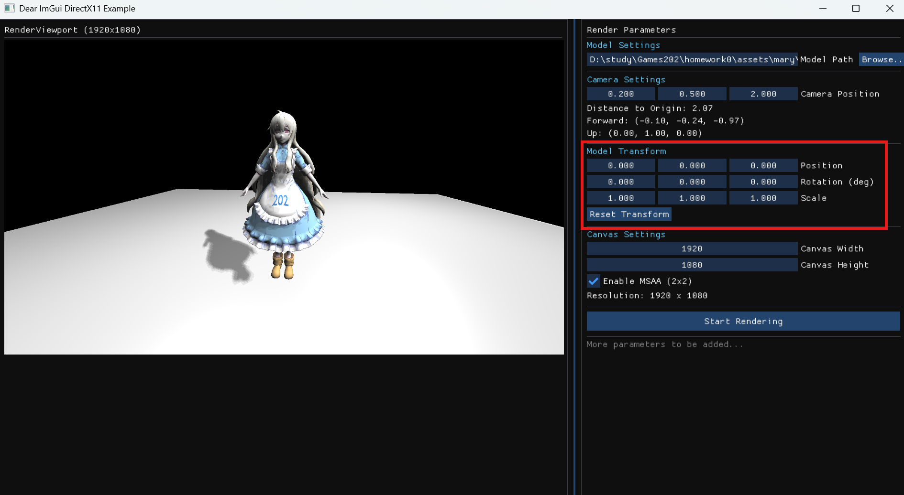
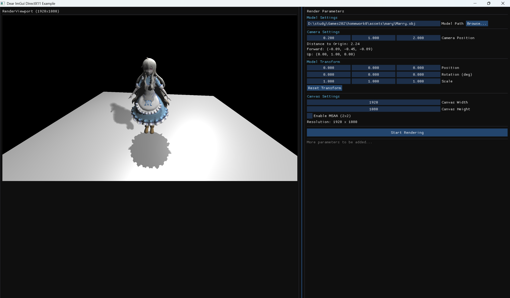

DevLog1 AYRenderer
开发日志 AYRenderer
渲染Pass，VertexShader
模型矩阵与法线矩阵
在AYRenderer的UI界面中，用户可以自行设置渲染物体的
Transform ：

这个 Transform 会形成所谓的 Model
矩阵，在顶点着色器（VertexShader）中会用到这个矩阵来对顶点进行变换。（即M变换）
当然所谓的顶点不只有位置和旋转的属性，还有法线属性，而法线的变换所对应的
Normal Matrix 则是 Model Matrix
的逆转置矩阵：
1 | Mat4 modelMatrix = object.transform.GetModelMatrix(); |
我们来证明一下，首先假设模型空间中某顶点对应的切线为 t⃗，该切线可以由模型空间的两个顶点 A, B 表示： t⃗ = B − A.
经过模型变换后，对应的切线 $\vec{t'}$ 为： $$ \vec{t'} = MB - MA = M(B - A) = M\vec{t}. $$
因此切线的变换和顶点位置变换是一样的，都是由模型矩阵 M 表示。
然后我们考虑模型空间中该顶点的法线属性 n⃗，法线是垂直于切线的，因此有： n⃗Tt⃗ = 0.
在世界空间中，该法线属性为 $\vec{n'}$，同样需要满足垂直于切线 $\vec{t'}$ 的条件： $$ \vec{n'}^T \vec{t'} = 0. $$
假设法线的变换矩阵为 N，则有： $$ \vec{n'} = N \vec{n}. $$
因此有： $$ \vec{n'}^T \vec{t'} = (N \vec{n})^T (M \vec{t}) = \vec{n}^T N^T M \vec{t} = 0. $$
我们需要让 NTM = I，即 N = (MT)−1，这就证明了法线矩阵是模型矩阵的逆转置矩阵。
View变换
以下是AYRenderer实现的VertexShader：
1 | namespace AYRRenderer |
这个函数会先计算所谓的MVP矩阵。M矩阵即上面提到的 Model
，由用户设定渲染对象的Transform而定。而View矩阵则通过以下数学函数计算：
1 | static Mat4 LookAt(const Vec3& eye, const Vec3& center, const Vec3& up) |
这个推导比较简单，可以看我学习Games101的笔记。主要思想就是对于正向地移动相机的变换并不好求，因此可以考虑先求出相对好求的逆变换。
Projection变换
项目提供的Projection函数如下：
1 | static Mat4 Perspective(float fovYDegrees, float aspect, float nearPlane, float farPlane) |
这个矩阵和Games101的推导不一样。经过Projection变换后，我们进入了一个所谓的Clip Space。这个空间事实上是个四维空间，而所有ClipSpace坐标的w值都等于变换前z值的相反数（即w = −z）。采用OpenGL规范，每个顶点的x,y,z的范围都应该是[-w, w]。这里硬性要求w为正数，而如果采用Games101的方式，你就需要自己修改一下六个面的相交与判Inside的策略了。
你如果要推导这个矩阵的话，可以使用和Games101的同款推导，只不过要注意变换后的w值是-z而不是z。Games101对于Projection的推导采用了两步，先将视锥体压缩成长方体，然后采用一遍正交投影。
为什么要在Clip Space中进行裁剪呢？这个和我们在NDC内做插值要使用透视矫正是一个道理。Clip Space到NDC中间经过一个透视除法，这个变换本身是非线性的。因此在NDC内进行线性插值与在Clip Space内进行线性插值，二者并不对应。然而Clip Space和World Space之间的变换是线性的，因此在Clip Space内进行线性插值是合理的。在NDC内计算线段和面的交点，和Clip Space内计算线段和面的交点，二者并不等价。
FragmentShader
AYRenderer提供了Blinn-Phong的FragmentShader实现：
1 | FragmentOutput BlinnPhongFSPolicy::Execute(const FragmentInput &input, const Uniforms &uniforms) |
具体公式可以参照Games101的推导。只不过这里的实现引入了一个attenuation的概念，用于模拟点光源的衰减。
Shadow Mapping
目前AYRenderer提供极其简陋的PCF和PCSS实现。PCF用于软化无面积光源的硬阴影，而PCSS则用于模拟有面积光源的软阴影。
1
2
3
4
5
6
7
8
9
10
11
12
13
14
15
16
17
18
19
20
21
22
23
24
25
26
27
28
29
30
31
32
33
34
35
36
37
38
39
40
41
42
43
44
45
46
47
48
49
50
51
52
53
54
55
56
57
58
59
60
61
62
63
64
65
66
67
68
69static float ComputeShadowPCFOrPCSS(const AYRScene::Light* light,
const Uniforms& uniforms,
const Vec3& worldPos)
{
if (!uniforms.enableShadow || !light->castShadow) return 1.0f;
if (light->shadowMaps.empty() || light->lightSpaceMatrices.empty() || !light->shadowMaps[0])
return 1.0f;
const auto& sm = light->shadowMaps[0];
const Mat4& lightMVP = light->lightSpaceMatrices[0];
// 世界坐标 -> 光空间
Vec4 lp = lightMVP * Vec4(worldPos, 1.0f);
if (std::abs(lp.w) < 1e-5f) return 1.0f;
Vec3 ndc = Vec4::PerspectiveDivide(lp);
// NDC -> UV，[0,1]
float u = ndc.x * 0.5f + 0.5f;
float v = 0.5f - ndc.y * 0.5f;
float depth = ndc.z; // depth buffer 0~1
if (u < 0.0f || u > 1.0f || v < 0.0f || v > 1.0f)
return 1.0f;
auto sample = [&](float du, float dv) -> float
{
float sd = sm->SampleDepth(u + du, v + dv);
return (depth - uniforms.shadowBias > sd) ? 0.0f : 1.0f;
};
// ----- PCF -----
static const Vec2 pcfKernel[16] = {
Vec2(-1.5f, -1.5f), Vec2(-0.5f, -1.5f), Vec2(0.5f, -1.5f), Vec2(1.5f, -1.5f),
Vec2(-1.5f, -0.5f), Vec2(-0.5f, -0.5f), Vec2(0.5f, -0.5f), Vec2(1.5f, -0.5f),
Vec2(-1.5f, 0.5f), Vec2(-0.5f, 0.5f), Vec2(0.5f, 0.5f), Vec2(1.5f, 0.5f),
Vec2(-1.5f, 1.5f), Vec2(-0.5f, 1.5f), Vec2(0.5f, 1.5f), Vec2(1.5f, 1.5f)
};
if (!uniforms.usePCSS)
{
float radiusUV = uniforms.pcfRadius / static_cast<float>(sm->width);
float sum = 0.0f;
for (auto k : pcfKernel) sum += sample(radiusUV * k.x, radiusUV * k.y);
return sum / 16.0f;
}
// ----- PCSS -----
// 1) Blocker search
static const Vec2 searchKernel[16] = {
Vec2(-2, -2), Vec2(0, -2), Vec2(2, -2),
Vec2(-2, -1), Vec2(0, -1), Vec2(2, -1),
Vec2(-2, 0), Vec2(-1, 0), Vec2(1, 0), Vec2(2, 0),
Vec2(-2, 1), Vec2(0, 1), Vec2(2, 1),
Vec2(-2, 2), Vec2(0, 2), Vec2(2, 2)
};
float searchUV = uniforms.pcssSearchRadius / static_cast<float>(sm->width);
float blockerSum = 0.0f;
float blockerCount = 0.0f;
for (auto k : searchKernel)
{
float sd = sm->SampleDepth(u + searchUV * k.x, v + searchUV * k.y);
if (depth - uniforms.shadowBias > sd)
{
blockerSum += sd;
blockerCount += 1.0f;
}
}
if (blockerCount <= 0.0f) return 1.0f; // 无遮挡者，完全亮
float avgBlocker = blockerSum / blockerCount;
// 2) 根据几何关系估算半影大小
float penumbra = (depth - avgBlocker) / std::max(avgBlocker, 1e-4f) * light->lightRadius;
float filterUV = penumbra * uniforms.pcfRadius / static_cast<float>(sm->width);
// 3) 可变核 PCF
float sum = 0.0f;
for (auto k : pcfKernel) sum += sample(filterUV * k.x, filterUV * k.y);
return sum / 16.0f;
}
PCF的原理是在ShadowMap中以当前像素为中心采样多个点，统计这些点中有多少被遮挡了（即深度值小于当前像素的深度值）。最终的阴影强度就是被遮挡的点占总采样点的比例。
PCSS则需要使用 lightRadius
来计算PCF的采样半径。这里我们在固定的区域执行Blocker
Search，统计平均遮挡者深度。根据当前像素与平均遮挡者深度的关系，估算半影大小。最后使用这个半影大小作为PCF的采样半径，执行可变核PCF。
$$ \text{Penumbra} = \frac{\text{Depth} - \text{AvgBlocker}}{\max(\text{AvgBlocker}, 1e-4f)} \times \text{LightRadius}. $$
渲染效果如下：

可以看到较远处的阴影更模糊，而较近处的阴影更清晰，这就是PCSS的效果。
多线程渲染
在渲染管线中的很多地方都可以采用多线程提高程序的并行度。
首先以VertexShader为例： 1
2
3
4
5
6
7
8
9
10
11
12
13
14
15
16
17
18
19
20
21
22
23
24
25
26
27
28
29
30
31
32
33
34
35
36
37
38
39
40
41
42
43
44
45
46
47
48
49
50
51
52
53
54
55
56
57
58
59
60
61
62
63
64
65
66
67
68
69std::vector<VertexShaderOutput> VertexShader::Execute(const DrawCall &drawCall) const
{
std::vector<VertexShaderOutput> outputs{};
if (!camera || !drawCall.mesh)
return outputs;
const Mat4& view = camera->GetViewMatrix();
const Mat4& projection = camera->GetProjectionMatrix();
const Mat4& model = drawCall.modelMatrix;
Mat4 mvp = projection * view * model;
Mat4 normalMatrix = drawCall.normalMatrix;
const size_t vertexCount = drawCall.mesh->vertices.size();
const size_t threadCount = std::max(1u, std::thread::hardware_concurrency());
std::cout << "VertexShader: Using " << threadCount << " threads for vertex processing." << std::endl;
const size_t batchSize = vertexCount / threadCount;
const size_t remainder = vertexCount % threadCount;
std::vector<std::thread> threads;
std::vector<std::vector<VertexShaderOutput>> threadLocalOutputs(threadCount);
size_t currentStart = 0;
for(size_t t = 0; t < threadCount; ++t)
{
// 分配顶点范围：最后一个线程处理剩余顶点
size_t currentEnd = currentStart + batchSize + (t == threadCount - 1 ? remainder : 0);
// 防止越界
currentEnd = std::min(currentEnd, vertexCount);
threads.emplace_back(
[this](const DrawCall& drawCall, const Mat4& mvp, const Mat4& normalMatrix, const Mat4& model, size_t startIdx, size_t endIdx, std::vector<VertexShaderOutput>& localOutputs)
{this->ProcessVertexBlock(drawCall, mvp, normalMatrix, model, startIdx, endIdx, localOutputs); },
std::cref(drawCall),
std::cref(mvp),
std::cref(normalMatrix),
std::cref(model),
currentStart,
currentEnd,
std::ref(threadLocalOutputs[t])
);
currentStart = currentEnd;
}
for(auto& thread : threads)
{
if(thread.joinable())
thread.join();
}
size_t totalSize = 0;
for (const auto& local : threadLocalOutputs)
totalSize += local.size();
outputs.reserve(totalSize);
assert(totalSize == vertexCount); // 确保没有丢失顶点
// 拼接所有局部结果
for (auto& local : threadLocalOutputs)
{
outputs.insert(outputs.end(), std::make_move_iterator(local.begin()),
std::make_move_iterator(local.end()));
local.clear(); // 释放局部内存
}
return outputs;
}
这里我们没采用任何锁机制，而是为每个线程分配一个独立的输出数组，线程之间没有共享数据，因此不需要担心线程安全问题。最后在主线程中将所有局部结果拼接成最终的输出。
这里注意，std::thread
出于安全考虑，默认将捕获的参数在自己的线程空间里做一个值拷贝，因此我们需要使用
std::ref 和 std::cref
来包装我们的参数，这样做值拷贝的是这个wrapper类，访问的仍然是原来的对象。
在Rasterizer，我将三角形进行了分批并行处理。
当然在内部执行FS的过程可能涉及到对共有的Buffer的访问，因此这里采用简单的SpinLock来作为互斥机制：
1
2
3
4
5
6
7
8
9
10
11
12
13
14
15
16
17
18
19
20
21
22
23
24
25
26
27
28
29
30
31
32
33
34
35
36
37
38
39
40
41
42
43
44
45
46
47
48
49
50
51// 轻量级像素自旋锁（不可拷贝/移动）
// 平常用的std::mutex是内核锁，由于我们这有大量像素需要锁，使用std::mutex会有很大性能开销，因此我们实现了一个简单的自旋锁
struct PixelSpinLock {
std::atomic_flag flag = ATOMIC_FLAG_INIT; // 初始为false（未锁定）
void lock() {
// 自旋等待，直到拿到锁（test_and_set返回false表示成功）
while (flag.test_and_set(std::memory_order_acquire));
}
void unlock() {
// 释放锁（清空flag）
flag.clear(std::memory_order_release);
}
// 禁用拷贝/移动（必须）
PixelSpinLock(const PixelSpinLock&) = delete;
PixelSpinLock& operator=(const PixelSpinLock&) = delete;
PixelSpinLock(PixelSpinLock&&) = delete;
PixelSpinLock& operator=(PixelSpinLock&&) = delete;
// 空构造（emplace_back需要）
PixelSpinLock() = default;
};
static std::unique_ptr<PixelSpinLock[]> pixelLocks;
static int pixelLockCount = 0;
static void initPixelLocks(int size)
{
if (size <= 0)
{
pixelLocks.reset();
pixelLockCount = 0;
return;
}
// 仅在尺寸变化时重新分配，避免每帧大量堆分配
if (size != pixelLockCount || !pixelLocks)
{
pixelLocks = std::make_unique<PixelSpinLock[]>(size);
pixelLockCount = size;
}
}
static PixelSpinLock& getPixelLock(int pixelIndex)
{
assert(pixelLocks != nullptr);
assert(pixelIndex >= 0 && pixelIndex < pixelLockCount);
return pixelLocks[pixelIndex];
}
可以采用RAII机制进一步优化，但我懒得搞了。具体源码见仓库。